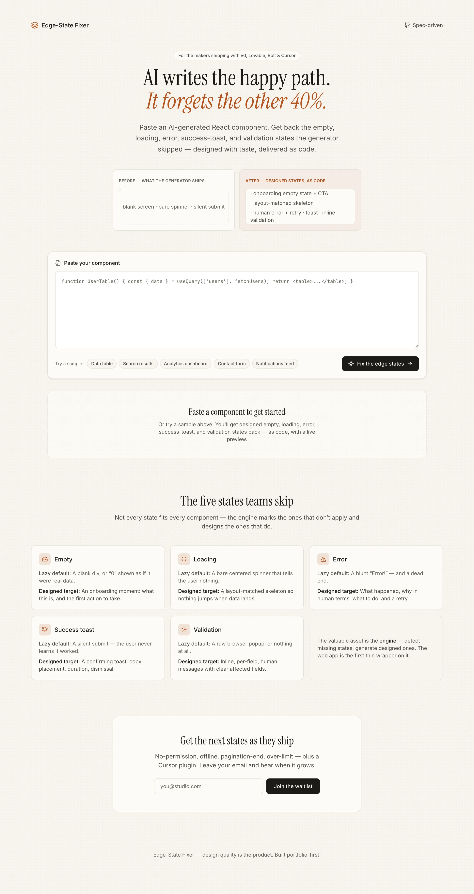
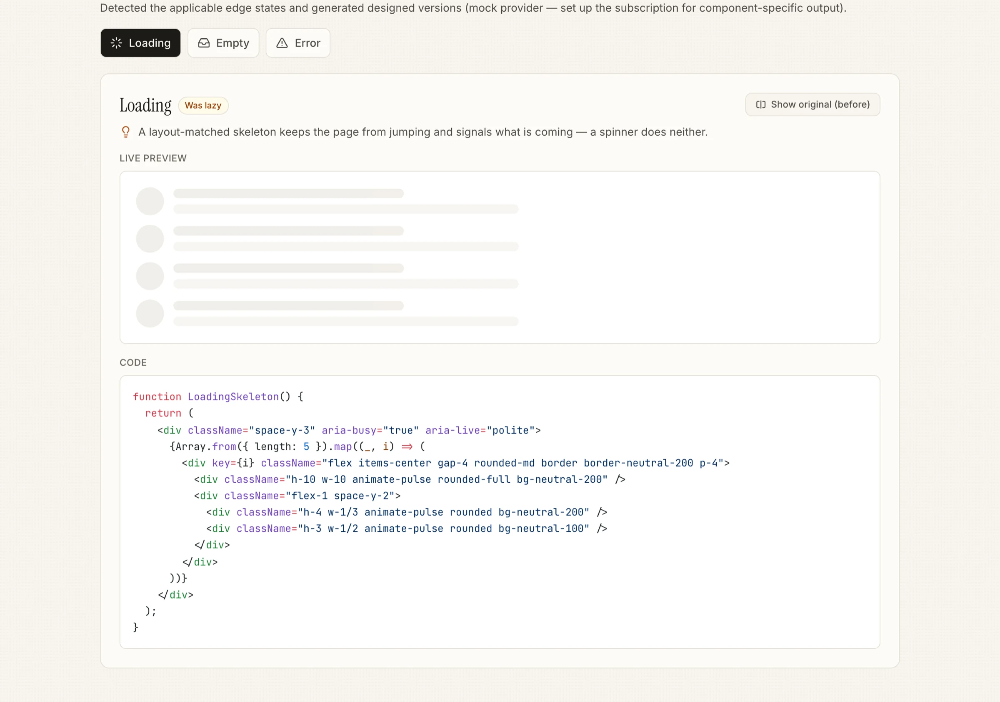
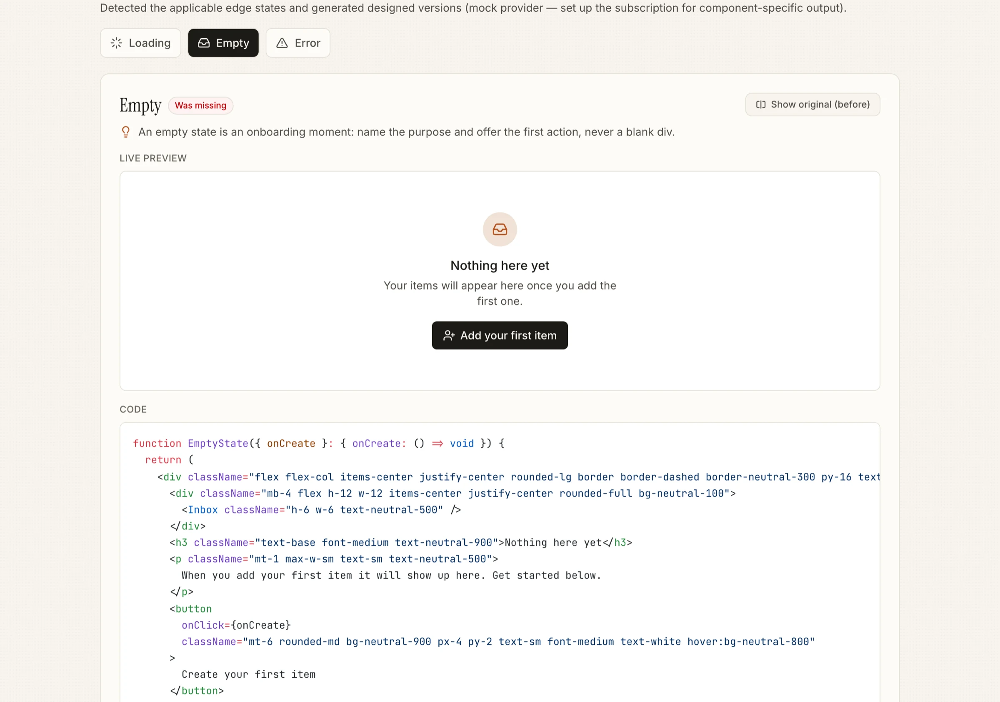
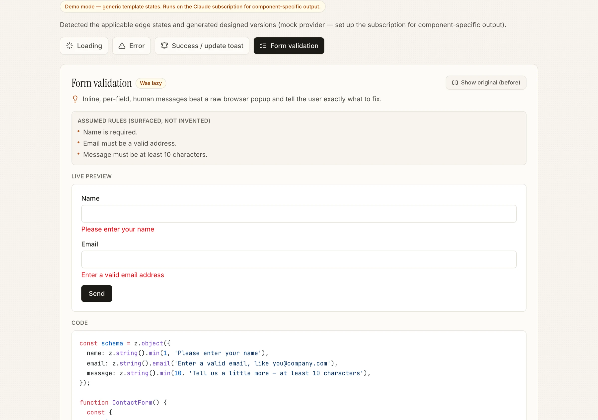
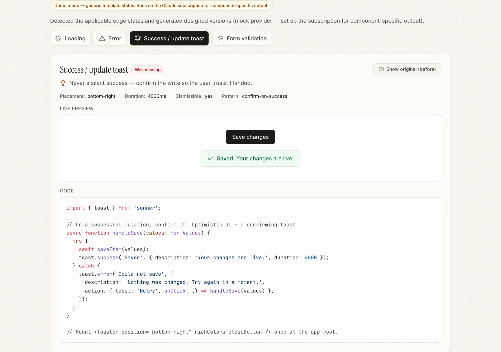

v0, Lovable, Bolt and Cursor build the screen where everything works — and quietly skip the ones where it doesn't. Edge-State Fixer takes an AI-generated React component, detects which of ten edge states it's missing, and writes designed, drop-in code for each — with the reasoning, a live preview, and a real before/after.
Try the live demoPaste an AI-generated component. A free static pre-pass works out which edge states it's missing; the model then writes designed, copy-paste code for each — with a one-line reason, a live preview, and a before/after toggle.
Code generators are excellent at the screen where everything works. They skip the states where it doesn't: the blank screen before data exists, the wait while it loads, the failure when it breaks, the silent submit, the raw validation popup. Those states are roughly 40% of a real product's experience — my estimate from tearing down AI-generated apps, not a measured figure — and they're skipped by design: nobody prompts for them, and a better model writes a better happy path, not a better failure state. That makes this a designer-shaped problem — I'd weight it ~90% design judgment, 10% model (how I think about it, not a metric).
What the teardowns changed: pasting components out of v0, Lovable, Bolt and Cursor, the striking thing wasn't that they skipped states — it's that they skipped the same states, the same way, every time. Because the gap is predictable, detection didn't need a model at all: I made it a free, deterministic pre-pass that decides which states are missing before any AI is called. That one finding — the gap is regular, not random — is why the detector is rules, not a prompt.
The lazy version of this is a thin call to an LLM: "add edge states to this component." A better model erases that overnight, and it produces different, taste-free output every run. So the valuable asset here isn't generation — it's encoded taste: a written, opinionated definition of what a good empty, error or validation state actually is, applied identically every time.
That taste lives in one file — packages/engine/src/prompt/system.ts — and it is the system prompt. The few-shot examples come from hand-designed fixtures beside it. This document, not the model, is the defense against "just re-prompt the generator." "Did you handle the empty case?" is a forever question, not a generation trick — which is exactly why the product survives the models getting better.
These aren't generic categories; each carries a specific design stance from the ruleset. Five shipped in the MVP; five more (the states products hit after launch — auth, real networks, scale, limits) landed in V1.
Icon → headline → why it's empty → a primary "first action" CTA. A blank div wastes the most common first impression.
Shape mirrors the real content (rows for a table, cards for a grid) so nothing jumps when data lands. aria-busy + live region.
Four beats: what happened + why + what to do + a retry. role="alert". Never "Something went wrong," never a raw error object.
Past-tense confirm ("Saved", "Sent"), placement, ~4s duration, dismissible. Chooses optimistic vs confirm-on-success by risk.
Message under each field, aria-invalid + aria-describedby, validate on blur. Assumed rules surfaced, never invented.
Names the wall, shows current-vs-required role, offers a forward path. Amber, not alarm-red. A 403 rendered blank reads as broken.
Keep the last-loaded UI (dim, don't blank), non-blocking banner, auto-refetch on reconnect. Never an infinite spinner.
"No matches for '<query>'" + clear-filters. Distinct from first-run empty — here data exists, the query excluded it.
Gate the loader on hasNextPage; replace the endless spinner with "You're all caught up." "Loading more" and "no more" must look different.
"You've used all 50 of your monthly generations" + a usage meter + when it resets / how to upgrade. Blameless copy. Design the feedback, never the limiter.
The split is deliberate: a cheap, free static pass decides what applies — reproducibly, with no model call — and the model only does the subjective part, writing the designed code. That's what makes the tool cheap to run and predictable to reason about.
Any AI-generated React/JSX — a table, form, dashboard, feed, search view.
An AST/regex pre-pass reads the code for real cues: fetch/useEffect/useQuery → data-dependent; onSubmit/mutations → mutating; a form; auth cues like 403/useSession/isAdmin/ShieldAlert; 429/quota; infinite-scroll. It even refuses to treat a bare role as an auth signal — it's usually a data column, not permission.
Every state is marked present, lazy, missing or not-applicable — so the tool fixes real gaps and pads nothing.
For each missing/lazy state the model returns zod-validated structured output (retry-once on a bad shape): designed code + a one-line rationale, matching your existing Tailwind and variable names.
Each fix arrives with a live in-document preview, a before/after toggle, and copy-to-clipboard — paste it straight back into your project.
Most tools pad their output to look thorough. This one does the opposite — a read-only table gets no validation; a pure form gets no first-run empty. Four verdicts, and two of them emit nothing:
Already handled well.
emits nothingHandled but under-designed — a bare spinner, a blank div, "Something went wrong."
emits a redesignNot handled at all.
emits designed codeDoesn't fit this component.
emits nothing
Take UserTable.tsx — a data table the generator shipped happy-path only. It fetches, shows a bare spinner while loading, and has no error path and no empty state: a failed request renders nothing, and zero users renders an empty <tbody>. Detection flags it as data-dependent, so empty · loading · error all apply. Here is the error state — the actual before and after code from the repo:
const [users, setUsers] = useState([]); const [loading, setLoading] = useState(true); useEffect(() => { fetch("/api/users") .then(r => r.json()) .then(data => { setUsers(data); setLoading(false); }); // no .catch → failure renders nothing // users.length === 0 → empty <tbody> }, []); if (loading) return ( // a bare spinner — no layout, no context <div className="animate-spin ..." /> );
<div role="alert" className="... py-16 text-center"> <AlertTriangle className="h-5 w-5 text-red-600" /> <h3>Couldn't load your team</h3> <p>We hit a problem reaching the server, so the list didn't load. This is usually temporary. Try again, and if it keeps happening, check your connection…</p> <button onClick={onRetry} disabled={isRetrying}> <RotateCw className={isRetrying ? "animate-spin" : ""} /> {isRetrying ? "Retrying…" : "Try again"} </button> </div>
Rationale (verbatim from the fixture): the error state is UX writing, not a stack trace — it names what happened, why in human terms, and what to do, with recovery one click away via a spinning "Try again." It never surfaces raw error.message, which would leak internals and mean nothing to the reader.
The same loop runs for every applicable state. These are real designed states from the tool:




The valuable decisions were about how a tool like this becomes something a developer trusts on their own code. Three examples, all real, from the ruleset and fixtures:
The public API is a single function returning a validated result — what the component does, and each state classified with its designed code and rationale.
import { detectAndFix } from "edge-state-fixer-engine"; const result = await detectAndFix(code); // { dataDependent, mutating, hasForm, summary, states } result.states.error // → { status: "missing", code, rationale } result.states.empty // → { status: "not-applicable" } ← emits nothing // toast carries placement, durationMs, dismissible, pattern; // validation carries the assumptions it surfaced (never invented rules)
A pnpm monorepo built engine-first. The engine holds all the value; the web app and MCP server are thin wrappers on the same detectAndFix().
The MCP server exposes the engine to any MCP client. Generate a screen, then ask the IDE to scan and fix — scan is free and local (no model); fix generates designed code; ruleset hands the IDE's own model the design standard.
# one command to add it to Claude Code claude mcp add edge-state-fixer -- npx -y edge-state-fixer-mcp # then, after generating a screen: "scan this component for missing edge states" # free, local "add the empty and error states" # generates code
Ten edge states are detected and generated from a single pasted component. Output is real and component-specific on the Claude subscription — no API key needed. The taste is validated against five hand-designed reference components — an analytics dashboard, a contact form, a data table, a notifications feed, and a search view — each producing states that visibly out-design a re-prompt. The full test matrix is green.
Five MVP + five V1 states, end to end from a paste, each emitted only where it applies.
Playwright across Chromium, Firefox, WebKit & mobile — plus 24/24 engine + MCP unit tests, and a WCAG AA axe gate.
Web app, MCP server (on npm) & CLI — the same encoded taste everywhere, fully decoupled.
The first version was the lazy one: a single prompt — "add the missing edge states to this component." It demoed fine and fell apart in use. Every run produced different, taste-free output, and a better model would erase the whole thing overnight. That failure is what forced the real insight — the value isn't generation, it's encoded taste — so I threw the thin wrapper out and moved the judgment into a written ruleset the model only fills in.
What I'd do differently: I built breadth — web, MCP, CLI, ten states — before proving anyone wants it. Next time I'd ship the free detector alone first and watch fix-acceptance before building the generator: demand data, then surface area.
Built for leverage: the taste lives in one engine, so it isn't a single app — it's an MCP server (on npm) and a CLI that other tools and coding agents call directly. The encoded judgment travels wherever a developer already works, instead of living behind one UI.